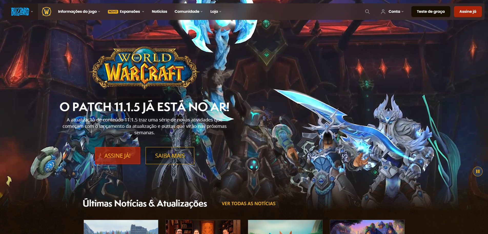
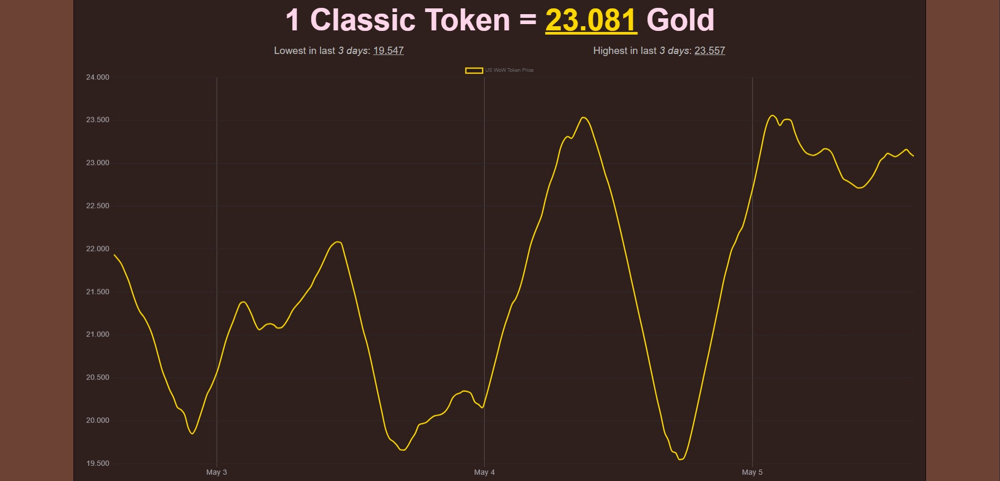
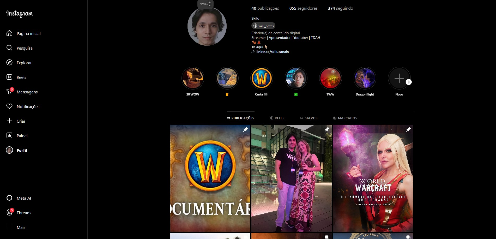
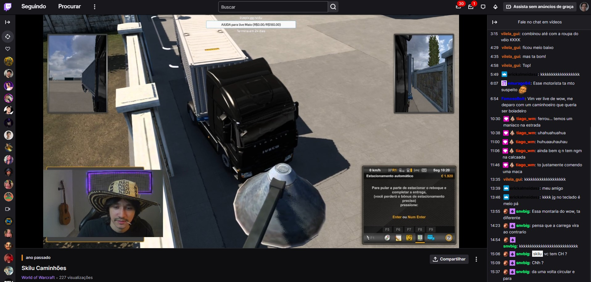

Meus sites favoritos: Matheus Luiz Massuda
World of Warcraft

Acesse: World of Warcraft
Archon
Acesse: Archon
WoW Token Price

Acesse: WoW Price Token
Instagram - Skilu

Acesse: Instagram Skilu
Twitch - Skilu

Acesse: Twitch Skilu
Youtube - Skilu
Acesse: Youtube Skilu
 Acesse: Archon
Acesse: Archon